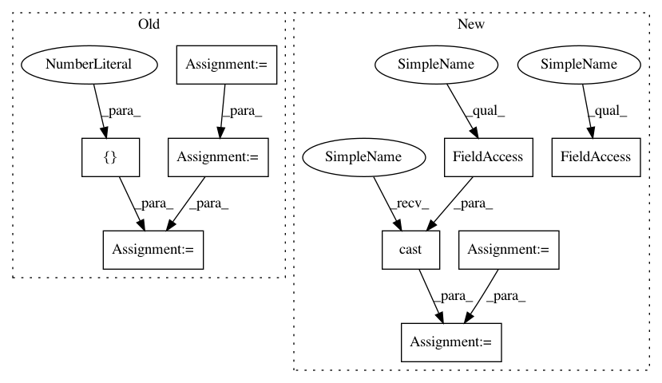

352ebffaa5bd74a454c3b2b10121b2d959ade2fc,opennmt/models/sequence_tagger.py,SequenceTagger,_build,#SequenceTagger#Any#Any#Any#Any#,49
Before Change
// predictions must contain tensors with the same batch size
// so replicate the transition matrix accordingly.
transition_params = tf.convert_to_tensor(transition_params)
transition_params = tf.expand_dims(transition_params, axis=0)
transition_params = tf.tile(transition_params, [tf.shape(logits)[0], 1, 1])
predictions["logits"] = logits
predictions["transition_params"] = transition_params
else:
probs = tf.nn.softmax(logits)
predictions["argmax"] = tf.argmax(probs, axis=2)
After Change
logits,
transition_params,
encoder_sequence_length)
labels = tf.cast(labels, tf.int64)
else:
probs = tf.nn.softmax(logits)
labels = tf.argmax(probs, axis=2)
labels_vocab_rev = tf.contrib.lookup.index_to_string_table_from_file(
self.labels_vocabulary_file,
vocab_size=self.num_labels)
predictions = {}
predictions["length"] = encoder_sequence_length
predictions["labels"] = labels_vocab_rev.lookup(labels)
return tf.estimator.EstimatorSpec(
mode,
predictions=predictions)
In pattern: SUPERPATTERN
Frequency: 3
Non-data size: 9
Instances
Project Name: OpenNMT/OpenNMT-tf
Commit Name: 352ebffaa5bd74a454c3b2b10121b2d959ade2fc
Time: 2017-08-22
Author: guillaume.klein@systrangroup.com
File Name: opennmt/models/sequence_tagger.py
Class Name: SequenceTagger
Method Name: _build
Project Name: tensorflow/benchmarks
Commit Name: 237d138e6af68e7aed794c4797f07eab2fad4261
Time: 2018-10-01
Author: haoyuzhang@google.com
File Name: scripts/tf_cnn_benchmarks/models/ssd_model.py
Class Name: SSD300Model
Method Name: get_learning_rate
Project Name: tensorflow/models
Commit Name: 5e854f25098ca40a4ac80197607bf883feaeb375
Time: 2018-02-13
Author: lzc@google.com
File Name: research/object_detection/utils/learning_schedules.py
Class Name:
Method Name: manual_stepping
Project Name: OpenNMT/OpenNMT-tf
Commit Name: 352ebffaa5bd74a454c3b2b10121b2d959ade2fc
Time: 2017-08-22
Author: guillaume.klein@systrangroup.com
File Name: opennmt/models/sequence_tagger.py
Class Name: SequenceTagger
Method Name: _build